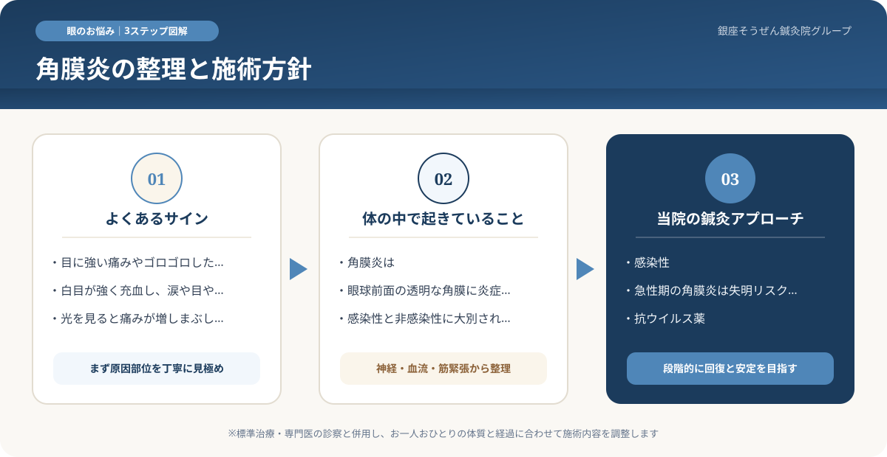

角膜炎の鍼灸
感染やコンタクト障害等で角膜に炎症が起きる疾患です。急性期は眼科治療を最優先とし、安定期に遠隔のツボ等で体調を整えます。
まず知っておきたい要点と改善の流れ

角膜炎は、眼球前面の透明な角膜に炎症が生じる疾患で、感染性と非感染性に大別されます。感染性角膜炎は細菌・ウイルス・真菌・アカントアメーバなどの病原体感染により発症し、不適切なコンタクトレンズの使用や水道水での洗浄が深刻な引き金になります。非感染性角膜炎は重症ドライアイ、外傷、紫外線、アレルギーなどが原因です。角膜は知覚が敏感で視力に直結するため、放置すると重症化し視力障害や失明に至る恐れがあります。
このようなお悩みはありませんか？
- ✓目に強い痛みやゴロゴロした異物感がある
- ✓白目が強く充血し、涙や目やにが増えている
- ✓光を見ると痛みが増しまぶしく感じる
- ✓コンタクトレンズ装用後から視界がかすむ
当院の施術アプローチ・改善の流れ
なぜ鍼灸で改善へ向かうのか？（作用機序の図解）
角膜炎に対する鍼灸は、後頸部〜眼周囲の微小循環と毛様体筋・自律神経調整機序を通じて、お体本来の回復力を引き出します。

眼球周囲の危険な深刺しを避け、風池・天柱・合谷・太衝など安全な経穴へ繊細に施術します。
PC・スマホ作業や緊張で固まった首深層筋と眼輪筋周囲の血流を促し、重だるさを軽減します。
交感神経優位による目の乾き・ピント調節疲労を鎮め、涙液分泌とリラックス反応を助けます。
眼科の点眼・定期検査を最優先としつつ、日々の眼精疲労や頭痛・肩こりの連鎖を整えます。
院長YouTube解説・関連動画
原因は、病原体に感染している場合とそうでない場合がある
角膜炎の原因には、病原体に感染している場合とそうでない場合があります。
病原体に感染していない非感染性角膜炎の原因は、コンタクトレンズを間違った方法で使っていることやコンタクトレンズを長い時間使っていること、ドライアイが重症化したこと、ゴミなどの異物による刺激や強い紫外線などです。
何かの病気が原因で角膜炎が起こることもあります。
病原体に感染することが原因で起きる感染性角膜炎は、ヘルペスウイルス、アデノウイルス、サイトメガロウイルスなどの細菌や真菌、アカントアメーバなどが原因で起こります。
・細菌性角膜炎
感染源: 細菌性角膜炎は主に細菌によって引き起こされます。一般的な細菌には、黄色ブドウ球菌（Staphylococcus）、肺炎球菌（Streptococcus pneumoniae）、緑膿菌（Pseudomonas aeruginosa）などがあります。
リスク因子: コンタクトレンズの不適切な管理、眼の外傷、免疫力の低下、他の眼の病気（例：乾燥眼）があります。
・ウイルス性角膜炎
感染源: ウイルス性角膜炎は主にヘルペスウイルス（HSV）、アデノウイルスなどによって引き起こされます。
リスク因子: 免疫力の低下、ストレス、紫外線などが関係します。
・真菌性角膜炎
感染源: 一般的な真菌にはカンジダ（Candida）、アスペルギルス（Aspergillus）、フサリウム（Fusarium）などがあります。
リスク因子: 農作業、眼の外傷（特に有機物によるもの）、免疫力の低下がリスク因子とされています。
・寄生虫性角膜炎
感染源: アカントアメーバ（Acanthamoeba）が代表的な寄生虫です。
リスク因子: 汚染水（例：自然の水域、未処理の水）、コンタクトレンズの不適切な管理がリスクとなります。
・非感染性角膜炎
原因: アレルギー、自己免疫の病気、摩擦や化学物質による刺激が原因である場合があります。
リスク因子: アレルギー歴、自己免疫の病気、化学物質との接触履歴など。
・その他の要因
手術後: 眼の手術後に感染リスクが高まることがあります。
薬剤性: 眼に使用する薬剤によっても角膜炎を引き起こすことがあります。
角膜炎の原因は多種多様であり、一つ一つにはその特有のリスク因子や関連要素が存在します。そして、それぞれの原因には特定の改善方法が必要となるため、正確な判断が不可欠です。
角膜炎で現れる症状は、眼の痛みや違和感、充血など様々
角膜炎では様々な自覚症状が現れます。角膜炎で現れる症状は、眼の痛みや違和感、充血や流涙、まぶしさ、かすみ、視力障害などです。
角膜は知覚が敏感で視力において重要な部分です。そのため、角膜炎が起きると強い自覚症状出るのです。
角膜炎はそのまま放っておくと重症化して視力障害が残ることもあります。
症状の一般的な特徴
赤目: 角膜炎はしばしば眼球の赤みを引き起こします。
疼痛: 角膜炎は通常、目に強い疼痛を伴います。
分泌物: 細菌性角膜炎などでは、目から分泌物が出ることがあります。
光感応: 痛みを伴う光感応（光を見ると痛みが増す）が起こることもあります。
視力低下: 進行した場合には、視力の低下が起こる可能性があります。
細菌性角膜炎の症状
分泌物: 黄色い膿が目から出ることが多いです。
眼瞼の腫れ: 眼瞼が腫れることがあります。
ウイルス性角膜炎の症状
水疱: ヘルペスウイルスによる角膜炎では、水疱が形成されることがあります。
泪: 量が多くなる場合もあります。
真菌性角膜炎の症状
糸状の斑点: 真菌が繁殖することで、角膜上に糸状の斑点が現れる場合があります。
寄生虫性角膜炎の症状
強い疼痛: 特にアカントアメーバが原因の場合、非常に強い疼痛が伴います。
非感染性角膜炎の症状
一過性の視力低下: 瞬間的に視力が低下することがある。
その他の症状
眼瞼痙攣: 疼痛や不快感から、無意識のうちにまぶたがピクピクする場合があります。
目の乾燥: 角膜炎の影響で、目の乾燥を感じることがあります。
角膜炎の症状は多様で、原因によってさまざまな特徴が見られます。これらの症状は、時として重症化し、改善を行わない場合は失明に至る可能性もあります。
角膜炎の改善方法は原因によって異なります。
非感染性角膜炎の場合は原因を取り除くことが大切です。炎症が強い場合は抗炎症点眼薬を使って改善を行います。角膜の傷がついている部分が細菌に感染することもあるため抗生物質点眼薬を合わせて使うことも多いです。
感染性角膜炎の場合、改善には薬を使います。薬は原因となる病原体に合わせて抗生物質や抗ウイルス薬、抗真菌薬などの薬を選んで使い改善を行います。
抗生物質
細菌性角膜炎: 広域抗生物質の点眼薬や塗り薬が一般的に使用されます。例えば、トブラマイシンやシプロフロキサシンなどです。
抗ウイルス薬
ウイルス性角膜炎: アシクロビルやバラシクロビルのような抗ウイルス薬が使用される場合があります。
抗真菌薬
真菌性角膜炎: ナトアマイシンやアムフォテリシンBなどの抗真菌薬が使用されます。
抗寄生虫薬
寄生虫性角膜炎: 例えば、アカントアメーバ角膜炎には、クロロヘキシジンやポリヘキシンBが使用されることがあります。
ステロイド薬
炎症の抑制: 重症の場合や、非感染性の原因による場合は、ステロイド点眼薬が使用される場合があります。
角膜移植: 進行した角膜炎で視力が大きく低下した場合、角膜移植が選択されることがあります。
デブリードメント: 角膜表面の感染組織や死んだ細胞を取り除く手術もあります。
その他の改善
人工涙液: 症状の軽減や快適性の向上を目的として、人工涙液が使われることがあります。
暗室法: 光による刺激を避けるため、暗い部屋で過ごすことが推奨される場合があります。
冷却: 炎症を和らげるために、冷却パックが用いられることがあります。
角膜炎の改善方法は原因や症状の重症度によって大きく異なるため、専門の眼科医による判断が必要です。自分で症状が判断できるものではなく、専門医の指導に従うことが重要です。
人工涙液は、自然な涙液に近い成分を含む液体で、主にドライアイや角膜炎などの目の病気に用いられます。人工涙液は、涙の代わりとなって目の表面を潤すことで、不快な症状を和らげます。
水分: 大部分が水であり、これが基本的な潤滑作用を果たします。
電解質: 通常はナトリウムやカリウムなどの塩類が含まれます。
高分子化合物: ヒアルロン酸、カルボキシメチルセルロースなどの高分子化合物が入っており、これが涙液と同様に粘性を持ち、目の表面に長く留まる効果があります。
保存料: 保存料が添加されていることもありますが、保存料フリーの製品もあります。保存料に対する感受性がある人は保存料フリーの製品を選ぶべきです。
液体型: 最も一般的で、使用が簡単です。
ゲル型: 粘性が高く、より長く目に残りますが、一時的に視界がぼやけることがあります。
乳剤型: 油成分を含むものもあり、これは特に乾燥がひどい場合に有用です。
使用方法
通常は点眼器で適量を目に滴下します。
症状に応じて1日数回から数時間ごとに使用します。
保存料: 保存料が含まれている人工涙液は、長期間使用すると目の刺激になる場合があります。
レンズ使用: コンタクトレンズを使用している人は、レンズに適したタイプの人工涙液を選ぶ必要があります。
多成分: アレルギー体質の人は、多くの成分が含まれている人工涙液に対して反応を示す可能性があります。
期限: 開封後の使用期限を守り、必要な場合は頻繁に新しい製品に交換することが重要です。
人工涙液は多くの場合、処方箋なしで購入することができますが、症状が重い場合や改善が見られない場合は病院に行くことが大事です。
角膜炎の原因がコンタクトレンズにあることも多いです。コンタクトレンズは適切な使用方法で使うことが非常に大切です。
清潔でない手でコンタクトレンズの付け外しを行なったり使い捨てコンタクトレンズを何日も連続して使ったり、コンタクトレンズをつけたまま寝たり、水道水で洗ったりすると角膜炎が起こる危険があります。
コンタクトレンズを使っている人に起きる角膜炎で1番深刻なものにアカントアメーバ―角膜炎という角膜炎があります。アカントアメーバ―角膜炎の改善には3ヶ月以上かかることがほとんどで、場合によっては視力障害が残ることもあります。
コンタクトレンズを使っている人は必ず適切な使用方法で使いましょう。また、何か異変があった時にはすぐに外し眼科に行くことをお勧めします。
ツボの位置と押し方
二間を探すときは、手の甲を上にして人差し指の付け根の側面のふくらみを押しながら指先に向かって進んで行ったとき、ふくらみのすぐ上にあるくぼみを探します。
お灸が効果的なツボのため、お灸が好きな人はお灸を行うことをお勧めします。押すときは、爪楊枝のとがっていない側で10回ほど押す方法がお勧めです。
液門は、薬指と小指の間の水かき部分の付け根にあります。
押すときは、ツボを押す側の手の薬指の力を抜いて少し曲げると押しやすいです。親指で左右5回ずつくらい押しましょう。力加減はいた気持ち良い程度がお勧めです。
地五会は、足にあるツボで、薬指と小指の骨の間のくぼんでいる場所にあります。
押すときは、押し回すようなイメージで思いっきり刺激をしましょう。
ドライアイ・眼精疲労・まぶたのツボ図解
実際の施術ではお一人おひとりの体質・症状に合わせて選穴しますが、ドライアイ・眼精疲労・VDT症候群・眼瞼下垂/けいれんのケアの臨床でよく用いられる代表的なツボの目安です。

📌 代表的なツボの詳細一覧表を開く（6穴） ▼
| ツボ名 | 位置の目安 | 主な狙い | セルフケアの注意点 |
|---|---|---|---|
| 攅竹（さんちく） | 眉頭の内側のくぼみ | まぶたの重だるさ・涙液分泌の副交感神経サポート | 眼球を押さず眉骨の縁に向かって優しく押します。 |
| 魚腰（ぎょよう） | 眉毛のちょうど真ん中、黒目の真上 | 眼瞼下垂・眼瞼けいれん・まぶたの疲労緩和 | 目を閉じて軽く3秒ほど当てて離します。 |
| 絲竹空（しちくくう） | 眉尻の外側のくぼみ | 目の奥の痛み・側頭部の張り・かすみ目ケア | コンタクトレンズは外した状態でケアすると安全です。 |
| 太陽（たいよう） | こめかみのくぼみ | デスクワーク後の目の疲れ・こめかみ痛の緩和 | 蒸しタオルで目元を温めたあとに行うと効果的です。 |
| 四白（しはく） | 黒目の真下、頬骨の小さなくぼみ | 下まぶたのけいれん・眼窩下部の循環改善 | 皮膚を強くこすらず垂直に軽く触れます。 |
| 合谷（ごうこく） | 手の甲、親指と人差し指の間 | 頭顔面・目の緊張を和らげる全身調整穴 | 仕事中の合間にも手軽に押せるツボです。 |
国際査読論文の科学的エビデンス
国際的な医学データベース（PubMed・Cochrane等）で報告されているドライアイ・眼精疲労・VDT症候群・眼瞼下垂/けいれんのケア領域の代表的な査読済み鍼灸研究をまとめています（標準治療との併用や研究上の限界を含めて正確に掲載）。
📚 査読論文データ・PubMed出典リンクを開く（4件） ▼
| 年・研究デザイン | 対象・規模 | 主な結果 | 限界・出典 |
|---|---|---|---|
| 2024年 メタ解析 | ドライアイ 16試験（n=1,383：人工涙液併用） | BUT（SMD 1.25, P<0.0001）、シルマー試験（SMD 1.55, P<0.0001）、角膜染色・総有効率（OR 4.09）が有意改善。 | 自覚症状OSDIは有意差なし（P=0.15）。人工涙液との併用評価。 Medicine (PMID: 38181299) |
| 2019年 二重盲検RCT | ドライアイ 49名（米国・6か月追跡） | 実鍼群はOSDIスコアが1週〜6か月まで有意改善（6か月p<0.01）、乾燥感・充血も有意軽減。 | 小規模・客観的涙液指標（TBUT等）は有意差なし。 Clin Ophthalmol (PMID: 31114151) |
| 2020年 Cochraneレビュー | 緑内障・高眼圧症 3 RCTs（n=137） | 一時的な眼圧低下の報告はあるが8週時点で差消失、視力は有意差なし。 | 全試験が高バイアス・確実性非常に低。点眼治療の代替不可。 Cochrane (PMID: 32032457) |
| 2025年 メタ解析 | 変性眼疾患 21研究（緑内障・黄斑変性等） | 総有効率はOR 3.52（p<0.00001）だが、統合視力（p=0.50）・眼圧（p=0.11）に有意差なし。 | 非ランダム化研究含む。眼科標準管理下での補完研究段階。 Complement Ther Med (PMID: 40850524) |
参考文献・出典
- 2024年 メタ解析（ドライアイ 16試験（n=1,383：人工涙液併用））— Medicine (PMID: 38181299)
- 2019年 二重盲検RCT（ドライアイ 49名（米国・6か月追跡））— Clin Ophthalmol (PMID: 31114151)
- 2020年 Cochraneレビュー（緑内障・高眼圧症 3 RCTs（n=137））— Cochrane (PMID: 32032457)
- 2025年 メタ解析（変性眼疾患 21研究（緑内障・黄斑変性等））— Complement Ther Med (PMID: 40850524)
よくある質問（FAQ）
Q. コンタクトレンズ使用中に目が痛くなりました。鍼灸院に行ってもよいですか？▼
Q. 治癒後のケアではどのようなツボを使いますか？▼
あわせて読まれる関連疾患（眼のお悩み）
花粉やダニ等への過敏反応で目のかゆみや充血が起きます。眼科点眼と併用し、ツボ刺激と自律神経調整で不快感を和らげます。
白目やまぶた裏の粘膜が炎症を起こす病気です。感染性は眼科受診を最優先に、アレルギー性の体質・免疫バランスを整えます。
アトピー性皮膚炎に伴う眼疾患の総称です。眼科・皮膚科での治療を最優先に、こすらない予防と安定期のツボ・体調ケアを支えます。
黄斑部に血漿成分が漏れ出し嚢胞状のむくみが生じる病気です。眼科での標準治療を最優先に、安定期の疲労・体調を支えます。
片眼の外傷や手術後に健常眼にも自己免疫性炎症が生じる重篤疾患です。眼科治療最優先で安定期の補完ケアを支えます。
角膜にアミロイドが沈着し強いまぶしさや異物感が生じる指定難病です。眼科治療最優先で安定期の疲労や首肩こりを支えます。
CLINICAL RECOVERY CASES
✨ 実際の臨床改善事例・回復経過を見る
銀座本院をはじめ各院での実際の改善事例を症状別に絞り込んでご確認いただけます。
おひとりで悩まず、まずはご相談ください
銀座本院・川口・大宮・横浜・博多・田無の各院でご予約を承っております。